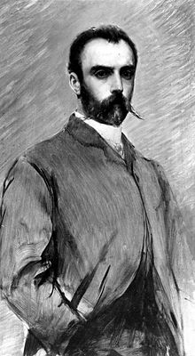
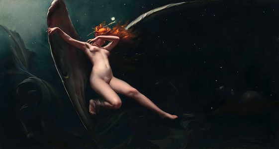
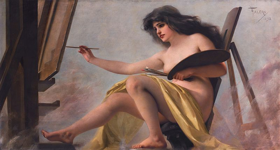
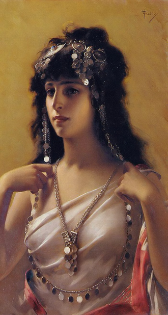
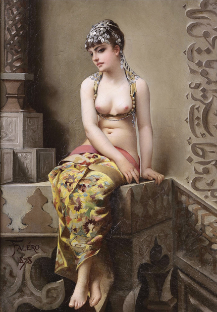
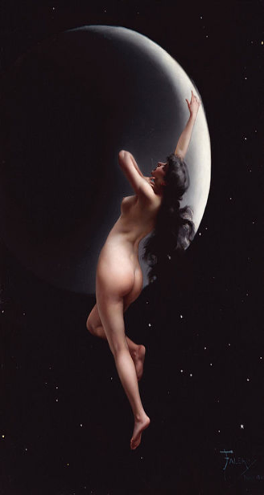
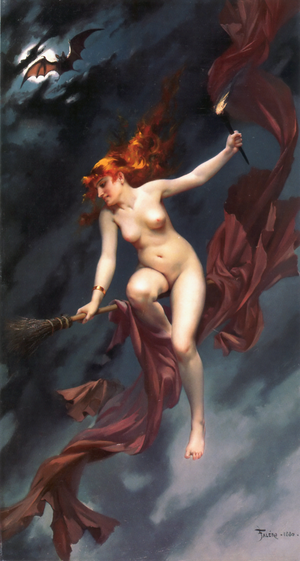
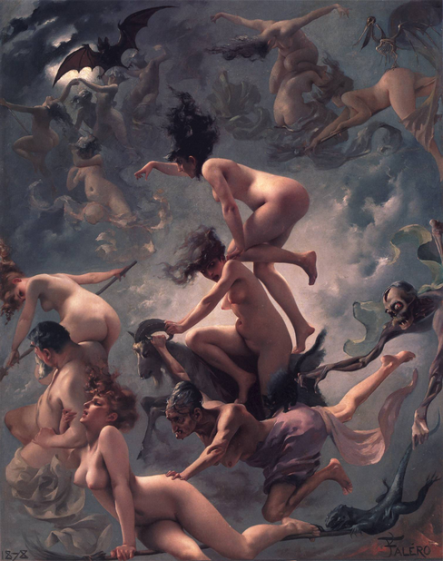

Luis Ricardo Falero
Cass Python, 2017-11-17Born in 1851, Luis Ricardo Falero who, among other things, specialized in female nudity, mythological, oriental and  fantasy art. A large majority of his paintings contained at least one nude or topless woman.
Falero was born in Granada, Spain, and would originally pursue a career in the Spanish Navy, but he gave it up to his parents' disappointment. He would walk all the way to Paris to study art, chemistry and mechanical engineering. He would find the experiments he had to conduct in mechanical engineering so dangerous that he would decide to focus on painting alone. He was a student of Gabriel Ferrier. After Paris, he studied in London, where he eventually settled down.
He would grow a particular interest in astronomy and incorporated celestial constellations into many of his art, such as in Moon Nymph (1883). His interest and knowledge of astronomy would also lead him to illustrate the works of Camille Flammarion.
In 1886, the same year of his death, his former housemaid and then model, Maud Harvey, sued Falero for paternity. The suit alleged that Falero seduced Harvey when she was 17. When he discovered she was pregnant, he dismissed her. She won the case and was awarded five shillings per week in support of their child.
Falero died at University College Hospital, London, at the age of 45.
A Collection of His Art
As stated, most of his art contains at least one topless lady, so uh, enjoy... (Click to enlarge)
Fairy Under Starry Skies, c. 1880

{kind=link}
An Allegory of Art (1892)

{kind=link}
An Oriental Beauty, c. 1880

{kind=link}
The Enchantress (1878)

{kind=link}
Moon Nymph (1883)

{kind=link}
The Witches Sabbath (1880)

{kind=link}
Witches on the Sabbath (1878)

{kind=link}
References
I. Luis Ricardo Falero
https://en.wikipedia.org/wiki/Luis_Ricardo_Falero [Internet Archive, archive.is]
II. Luis Ricardo Falero's Art
https://commons.wikimedia.org/wiki/Category:Luis_Ricardo_Falero